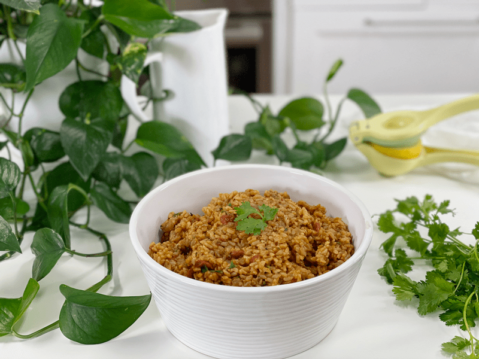
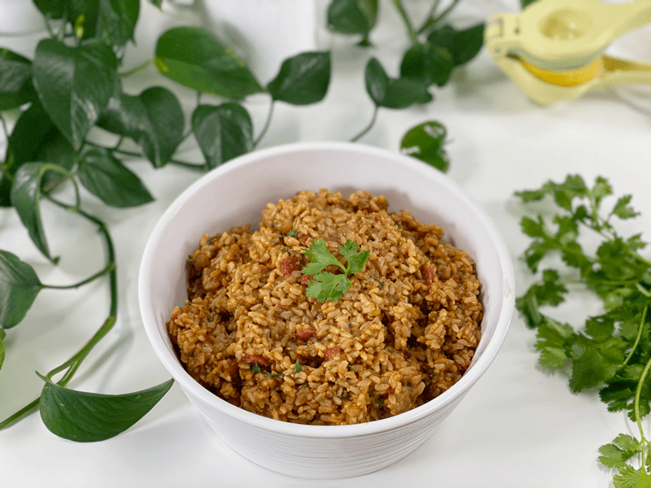
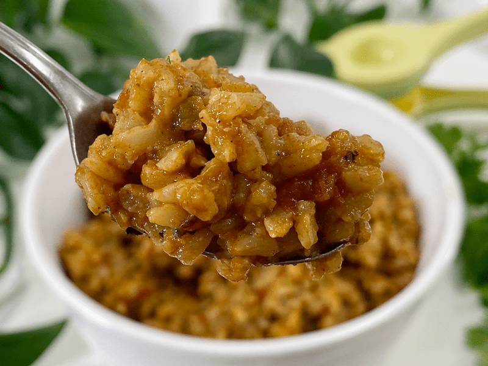
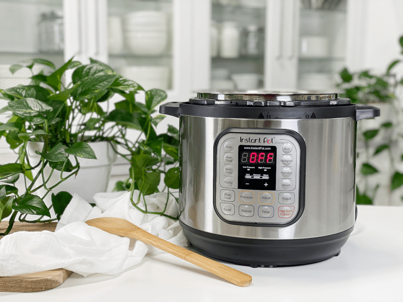

Spanish Brown Rice | Cooked | Instant-Pot | Oil-Free

This Spanish rice dish is simple but a great addition to mealtime, and it is perfect for leftovers the next day. It is super flavorful thanks to the vegetable broth, spices, onions, and garlic. I like to toast the rice before adding in the remaining ingredients, giving much more flavor to this dish. It also helps to create fluffy rice and keeps it from getting soggy or mushy. Most Spanish rice dishes use oils, but I enjoyed my personal challenge of making it oil-free. I hope you enjoy it as well!

As of late, rice has been something of a staple in our house. Typically, I make a batch of plain brown rice, dressing it up throughout the week. But today, I was ready to enjoy something with a bit more flavor. So, with a few staples from the pantry, I created a delicious and filling rice dish.
I had to giggle as I typed in how much this recipe yielded (6 cups). To anyone just passing by, you would think I either have a large household to feed or I was once a cook for the army. It’s true, I do cook large quantities, but my whole approach is batch cooking. I LOVE to cook once and enjoy it many times throughout the week, as well as freezing some for a rainy day when I don’t want to cook. Further down below, I shared some ideas on how to reuse this dish for a few days. Ready to get busy in the kitchen? Let’s first hit a few culinary tips before we dive in…

Tips and Techniques
Brown Rice
- I choose brown rice over white for the nutrient boost. If you have only white rice on hand, feel free to substitute it.
- Within the preparation section, you will see that I toasted the rice a little bit. Toasting the rice until it browns ever so slightly gives it an incredibly rich and nutty flavor. Toasting rice is usually done in a dry saucepan (or with a little oil) over moderate heat, just until it becomes aromatic and colors a little. I didn’t do that exactly, but close enough.
Pantry Items
- I did use a few canned items: fire-roasted diced tomatoes with garlic, tomato paste, and green chilies. Normally, I would make it all from fresh ingredients, but with our limited trips to the store (due to COVID), I used what we had on hand. There is no shame in that. When we do the best we can with what we have, I believe that it sends a message of love to our inner well-being and therefore can still have a positive effect on our bodies.
Cilantro and Lemon Juice
- Both of these items are added to the recipe at the very end of the cooking process. Fresh herbs are more delicate, and in order to maintain their vibrant color and flavor, it is best to add them either at the end of cooking or upon serving.
- For more light reading on this topic, click (here) to increase our culinary skills when it comes to cooking with dried or fresh herbs.
- If you don’t have access to fresh cilantro, you can replace it with 1 tsp of dried cilantro. If this is the case, add it along with the other spices, as it will take longer for the cooking process to coax the flavor from the dried herb.
- As far as the lemon juice goes, this was also added at the end of the cooking process because when lemon juice is boiled, it reduces, which means that water evaporates. This concentrates and changes the flavor. The now cooked juice, while still clearly identifiable as lemon, will be much less bright.
Vegetable Broth
- I use vegetable broth in a LOT of my recipes, because it adds a layer of flavor to any recipe. If you don’t have any on hand, you can use water.
- I highly suggest getting in the habit of stocking vegetable broth in your kitchen. You can purchase it or you can make your own. I have a post on how to make it with vegetable scraps, which can be found (here). In most cases, you can use broth in place of water in other dishes.

How to Enjoy this Dish
- Enjoy as-is.
- Use as a taco or burrito filling.
- Serve the warm rice over a bed of greens and sliced tomatoes.
- This rice makes a great side dish for darn near any meal.
- Use leftovers in a soup.
- Create nachos with it. Place your favorite corn chip on a plate, lay a bed of Spanish rice over the top, add sliced peppers, salsa, and vegan cheese.
- Throughout the week, add in some organic corn and cooked black beans… giving the dish an up-do!
I hope you enjoy this recipe. Many blessings, amie sue
Yields 6 cups
- 2 cups long-grain brown rice, soaked
- 2 Tbsp water
- 1 small onion (1/4 cups) finely chopped
- 2 cloves (1 tsp) garlic minced
- 2 tsp ground cumin
- 2 tsp chili powder
- 1 tsp sea salt
- 1/2 tsp paprika
- 1/4 tsp black pepper
- 1 1/2 cups (14.5oz can) fire-roasted diced tomatoes with garlic
- 1/3 cup (4 oz) green chilies
- 2 Tbsp tomato paste
- 2 1/2 cups vegetable broth
Stir-In
- 1/4 cup minced fresh cilantro
- 1 Tbsp fresh lemon juice
- Soak the rice overnight in a bowl of water along with 2 Tbsp raw apple cider vinegar. Once done soaking, drain and rinse the rice.
- Set the Instant Pot to the “Sauté” mode, adding 2 Tbsp water and the diced onion. Cook for 1-2 minutes, stirring frequently until the onion is fragrant and translucent. If the onions start to stick or the bottom of the pan starts to brown, add a little bit more water.
- Toast the rice: Add the rice, stirring almost constantly so it doesn’t stick, until the rice is toasted, roughly 3-4 minutes.
- Stir in the garlic, cumin, chili powder, salt, paprika, and black pepper.
- Add the diced tomatoes, green chilies, tomato paste, and vegetable broth, giving it a good stir.
- Secure the Instant Pot lid and flip the switch on the top to “Sealing.”
- Press the “Manual” button and adjust the time to 20 minutes on “High” pressure.
- Once done cooking and the alarm beeps, let it naturally release the pressure for about 28 minutes. Once the pin drops on the lid (an indicator that all the pressure is released), remove the lid.
- Stir in the cilantro and lemon juice.
- Be sure to store leftovers properly in an air-tight container. It can last in the fridge for up to 5-6 days. To reheat, just warm on the stove for a few minutes. It can also be frozen to be used at a future time. Simply portion out in single or meal-sized servings into freezer-safe containers or bags, label, and place in the freezer for 4-6 months.
I failed to get the cooking process photographed. It’s all very easy and I have complete faith in you! But for those of you who are not aware of what an Instant Pot is… here’s a picture of one. I highly recommend one as I use mine almost daily!

Add ingredients to the Instant Pot “bowl.”
© AmieSue.com